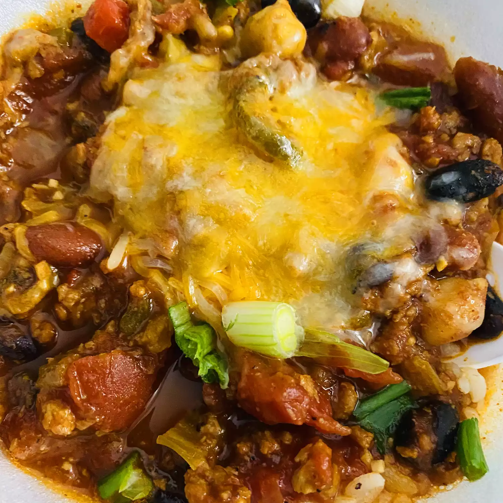

Vegetarian Chilli Recipe

Vegetarian Chilli
Ingredients
- Onion cooked in olive oil
- 2 tablespoons dried oregano
- 1/2 teaspoon salt
- 1/2 tablespoon ground cumin, chilli powder and black pepper(ground)
- 2 tablespoons fresh minced garlic
- Fresh Onions, Celery, Green Bell Peppers and Jalapenos
- Canned chile peppers, whole peeled tomatoes, kidney beans, garbanzo beans, black beans, and whole kernel corn.
- 1 quart milk
- salt and ground black pepper to taste
- 1 cup heavy cream
- 9 no-cook lasagna noodles
- 11/3 cups finely grated Parmesan cheese
Steps:
- Season and cook the onion until tender, then stir in the fresh veggies.
- Add the vegetarian crumbles and simmer.
- Stir in the remaining ingredients (sans corn), boil, then simmer for 45 minutes.
- Stir in the corn and cook for 5 more minutes.
Home